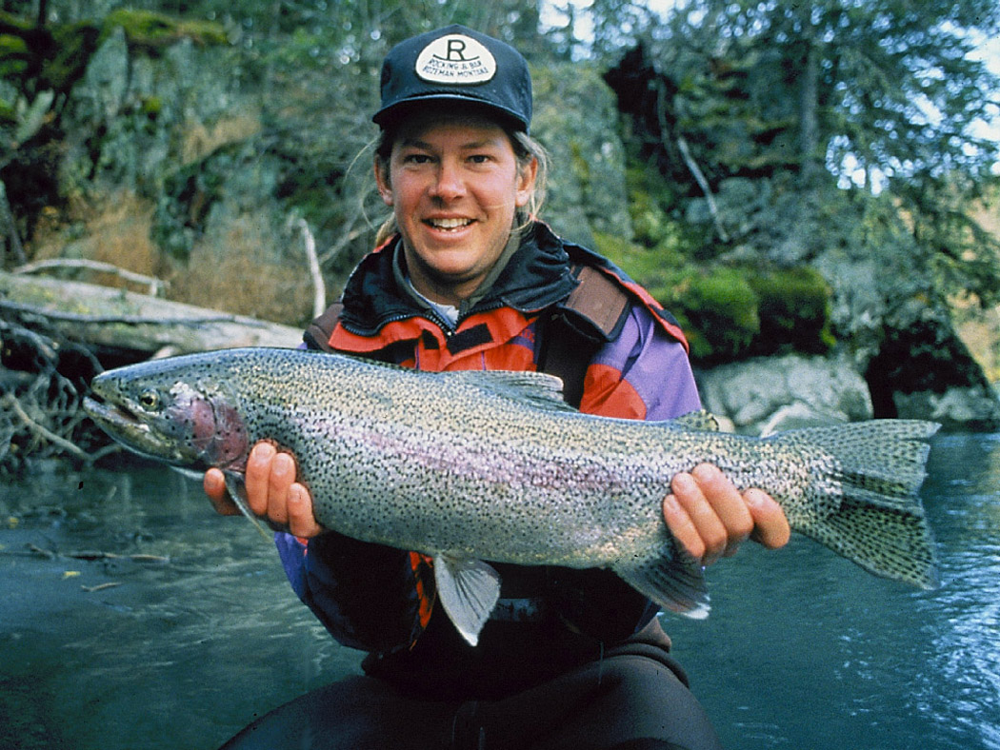
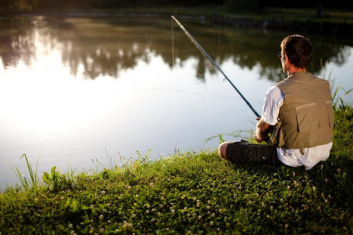

MOJE HOBBY - WĘDKARSTWO

Początki mojej przygody z wędkarstwem.
Łowienie ryb od wieków jest zajęciem uwielbianym przez wielu ludzi. Ja po raz pierwszy wędki dotknąłem w wieku 5 lat. Wędkarstwo spodobało mi się na tyle, że do dzisiaj, gdy tylko nadejdzie sezon, łapie za sprzęt i od razu udaję się nad wodę, aby złapać jeszcze więcej ryb.
Wyróżniamy 6 rodzajów wędkarstwa:
- Wędkarstwo morskie – rodzaj wędkarstwa, w którym poławia się ryby morskie na wędkę z pokładu łodzi, z brzegu plaży lub z nabrzeża portowego. Zazwyczaj, pod tym pojęciem rozumie się wędkarstwo kutrowe, polegające na łowieniu z pokładu łodzi.
- Wędkarstwo muchowe – jeden ze sposobów wędkowania, polegający na poławianiu ryb techniką z wykorzystaniem metod sztucznych na tzw. muszkę. Wędkarz (muszkarz), posługuje się wędką muchową, która jest zaopatrzona w kołowrotek muchowy oraz jeden z trzech rodzajów sznura, specjalnej linki.
- Wędkarstwo podlodowe – rodzaj hobby i sportu, polegający na połowie ryb spod lodu. Praktykowane na zamarzniętych akwenach. Zasady połowu w Polsce regulowane są przez Polski Związek Wędkarski, zawarte w Regulaminie Amatorskiego Połowu Ryb PZW.
- Wędkarstwo spinningowe – metoda sportowego i amatorskiego połowu ryb przy użyciu wędki, kołowrotka i sztucznej przynęty polegająca na naprzemiennym zarzucaniu jej i ściąganiu za pomocą wędziska i kołowrotka. Wędkarz może wykonywać także wabiące ruchy wędziskiem tak, aby ruch przynęty jak najbardziej przypominał ruch chorej, przestraszonej rybki.
- Wędkarstwo spławikowo-gruntowe – metoda połowu ryb, rodzaj hobby i sportu, polegający na połowie ryb z brzegu lub łódki. Wędkarz do połowu ryb używa metody gruntowej, spławikowej lub powierzchniowej.
- Trolling – metoda połowu ryb drapieżnych polegająca na ciągnięciu wędką przynęty na żyłce lub lince za łodzią. Ruch przynęty imituje ruch ryby i prowokuje do ataku. Przez pewien czas metoda była zakazana w Polsce, obecnie dozwolona. Dozwolona też w niektórych krajach Skandynawii.
Wiedza o technikach wędkowania

Dopiero po 1989 r. większe otwarcie na światową literaturę wędkarską (w której profesjonalna nomenklatura tematu była już ukształtowana) oraz nastanie wolności wydawniczej spowodowały ogromne, w stosunku do poprzednich lat, zwiększenie nakładów i tytułów wydawnictw wędkarskich, nie tylko ogólnoteoretycznych, ale także wszelkiego rodzaju monografii i pozycji zajmujących się wieloma szczegółowymi aspektami wędkarstwa. Na tej podstawie ujednoliciły się pojęcia i definicje dotyczące teorii wędkowania. Ustaliły się pewne istotne reguły w tym zakresie (chociaż wciąż w części literatury terminy te są stosowane zamiennie).
Metody wędkowania
Metodą wędkowania nazywa się taki sposób łowienia ryb na wędkę, który w zakresie sprzętu i sposobów jego użycia, bardzo znacząco odbiega od innych stosowanych w połowach niekomercyjnych. Istnieje więc metoda spinningowa, muchowa oraz spławikowo-gruntowa. Wędkarstwo zimowe, a raczej podlodowe, stanowi poniekąd minisyntezę wędkarstwa spławikowego i spinningowego, ale ze względu na warunki wędkowania, zminiaturyzowany sprzęt oraz stosowane przemiennie przynęty naturalne i sztuczne, a nawet łączenie tych przynęt, predestynuje wędkarstwo podlodowe do uznania za odrębną metodę wędkowania. Ostatnio władze wędkarskie zaakceptowały jeszcze jedną, na Zachodzie od dawna stosowaną, metodę trollingową, u nas jeszcze mało dostępną i nierozpowszechnioną. Również coraz popularniejsze ostatnio wędkarstwo morskie, z użyciem morskich jednostek pływających, łączące metodę spinningową, polegającą w zasadzie na trollingu (związanego z ruchem jednostki pływajacej) z metodą gruntową w czasie wyłączenia napędu jednostki na łowis ku, z uwagi na bardzo wysokie wymagania sprzętowe: nadzwyczaj wytrzymałe wędzisko, zbudowane nieraz z najwyższej klasy komponentów używanych w lotnictwie, z mocnymi przelotkami, odpornymi na korozję i ścieranie; linki o najwyższych parametrach wytrzymałościowych; duży, odporny na wodę morską i rdzewienie kołowrotek z wytrzymałymi przekładniami, z bardzo pojemną szpulą, mieszczącą nawet kilkaset metrów grubej linki; pasa biodrowego z gniazdem na dolnik wędziska i z zaczepami bezpieczeństwa zapinanymi do relingu stanowiska w czasie holowania dużej ryby – uznawane jest obecnie za odrębną metodę wędkowania.